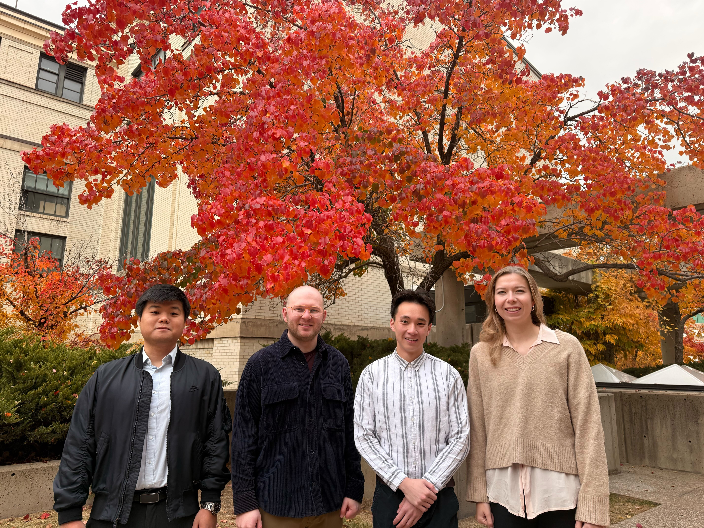

Our Story
Roof was born from a simple observation: property management shouldn't be complicated. Whether you're a landlord managing multiple properties or a renter trying to pay rent and report maintenance issues, the process has traditionally been frustrating and fragmented.
We set out to build a solution that brings everyone together on one platform, making property management transparent, efficient, and stress-free.
